James Scott Wead III
847 809-8313 · jimmy@wead.ai · Palatine, IL
Professional Summary
Multidisciplinary sales, construction, and technology leader with 25+ years of high-impact experience across construction project management, one-call-close technical sales (18 years in 100% commission roles), and AI-driven investigative systems. Proven track record of results: Awarded Rookie of the Year at IPA for generating $3.2M in consulting sales and led a $4.4M design/build fire restoration for Bay Marine from disaster response through occupancy. Independently developed a litigation-grade legal research platform anita (Automated Network for Investigative and Technical Analysis) in under 4 months – work valued at $600K+ – demonstrating advanced Python full-stack development and data forensics. Trained in Metl-Span, Varco Pruden, and Nucor building systems; fluent in blueprint analysis, technical selling, and territory development. Combines a builder-first mindset with an investigator's eye for detail to consistently deliver value and integrity.
Key Skills
Project Management & Structural Design: Turnkey design/build execution for PEMB structures and cold-storage facilities.
Insulated Metal Panels (IMP) & Building Envelopes: Expert in IMP wall/roof systems (Metl-Span, OneDek), vapor barrier integration, and airtight cold-storage envelopes.
Technical Sales & Territory Development: One-call-close sales strategy, Midwest territory management, and contractor network building from scratch.
Legal/Regulatory Compliance Analytics: Workflow design for code compliance, FIRREA/HUD/RICO violation tracking, and FOIA-triggered document analysis.
AI & Data Analysis: OCR processing, metadata mapping, and semantic de-duplication for large datasets (80K+ records) using Python, FastAPI, and Pydantic frameworks.
Software & Tools: FastAPI, Pydantic, JSON schema design, GitHub Copilot-assisted development, Notion integration, command-line (CLI) data pipelines, Google Drive API, VS Code.
Technical & Investigative Development
Independent Researcher & System Architect — July 2024 – Present
Began developing investigative tools and legal automation frameworks in mid-2024 through manual research, public records analysis, and document mapping — later evolving the project into a full-stack AI-powered system known as anita (Automated Network for Investigative and Technical Analysis).
Built a proprietary forensic pipeline to flag financial misconduct, trace shell companies, and surface retaliation patterns across 86,000+ records.
Transitioned from traditional research to AI-based analysis in early 2024, leveraging FastAPI, Python, GitHub Copilot, and JSON schema design to automate previously manual workflows.
Delivered litigation-grade reports valued at over $600K in equivalent consulting output — supporting active cases and regulatory referrals (HUD, IDFPR, FIRREA).
Integrated OCR, metadata indexing, FOIA relevance scoring, and RICO predicate chain detection into a modular architecture anchored in clean, reproducible code.
Continuously refined the system with legal logic models and deep-link search capabilities, connected to Notion for collaborative case intelligence.
Design/Build Manager & Lead Project Manager — T.A. Bowman Constructors (Bloomingdale, IL) — March 2021 – June 2024
Managed a $4.4M+ fire restoration of the Bay Marine boat facility in Waukegan, IL, from initial disaster response through final occupancy – coordinated 10+ change orders, specialty sub-trades, and code upgrade solutions.
Designed a Walmart Distribution Center structure in Auburn, IN and oversaw complete building envelope installation using Metl-Span insulated panels with advanced vapor barrier detailing for climate control.
Won a national Nucor CAD design challenge (2024) for the most cost-efficient, code-compliant pre-engineered metal building design. Introduced an innovative insulated roof deck system (OneDek) on a Boys & Girls Club retrofit, which became a showcase project for the manufacturer.
Sales Executive — Midwest Territory — KMK Sales (Manufacturer Rep) (Midwest U.S.) — 2018 – 2021
Exclusive Midwest representative for leading building envelope products (Metl-Span IMPs, Jamison cold-storage doors, Vapor Armor barriers, Dow foam insulation, etc.), covering IL, MN, WI, IA, ND, SD (and CO).
Conducted detailed take-offs, estimates, and on-site trainings for contractors on insulated panel systems – addressing thermal bridging, air seals, and installation best practices.
Built a full general contractor target list by state from scratch, and drove specification of IMP solutions in high-profile projects (e.g. supported Metl-Span's award-winning Confluence Center project) to ensure technical alignment and on-site success.
Outside Sales Consultant — Culligan Water (Greater Chicago Area) — 2008 – 2018
Consistently top-performing sales representative (multiple regional awards, incl. "Tidal Wave" and Top Sales honors) for residential and commercial water treatment systems.
Built a loyal client base through trust and integrity – known as the "Culligan Man" trusted by homeowners and facilities managers; maintained relationships and referral business years after the initial sale.
Featured in the national "Your Healthy Home" TV segment as a model Culligan consultant, reinforcing credibility and customer confidence.
Led Sales Excellence for Culligan: Earned numerous national and regional awards including multiple "Tidal Wave" honors. Participated in corporate-sponsored commercial training walk-throughs to demonstrate best practices. Represented the company in the territory containing Culligan's historic corporate headquarters (established 1936 in Rosemont, IL).
Sales Representative — Bob Rohrman Auto Group (Jeep/Chrysler) (Palatine, IL) — 2007 – 2008
Achieved high quarterly vehicle sales in a fast-paced retail environment by focusing on customer needs and product knowledge, leading to repeat customer referrals and sustained revenue growth.
Inside Sales (Rookie of the Year) — International Profit Associates (IPA) (Buffalo Grove, IL) — 2005 – 2007
Awarded Rookie of the Year in 2006 for generating $3.2M in consulting revenue through high-volume cold calling and consultative selling to SMB clients.
Sales Technician / Crew Lead — Stanley Steemer (Palatine, IL) — 1999 – 2005
Rose from technician to crew lead while consistently ranking as a top sales performer in service upsells (twice earning a national Indy 500 award trip).
Trained and mentored new technicians in both equipment operation and customer service excellence.
Technical Projects & Investigative Research
Founder & Lead Developer – "anita" Investigative Platform (Independent Project, 2024 – Present)
Sole architect of anita (Automated Network for Investigative and Technical Analysis) – a proprietary legal forensics and document-intelligence platform designed to expose misconduct, financial fraud, and retaliation patterns across large datasets. Built a full-stack Python architecture (FastAPI, Pydantic) with modular pipelines for OCR processing, shell-entity detection, statutory triggers (FOIA, RICO), and timeline mapping.
Ingested and analyzed 86,000+ records with custom JSON schemas and cross-document search capabilities. Engineered automation for metadata tagging, semantic duplicate detection, and entity resolution to reverse-engineer complex financial transactions and shell company networks.
Produced litigation-ready investigative reports (comparable to $600K+ of consulting work) by developing this system end-to-end in under 90 days. Deliverables have supported formal complaints and evidentiary packages for HUD, state regulators, and the Illinois Attorney General.
Leveraged GitHub Copilot and agile trial-and-error development to rapidly iterate on features. Integrated outputs with Notion for case knowledge management and maintained rigorous data integrity through version-controlled pipelines and document indexing best practices.
Education
William Fremd High School, Palatine, IL — High School Diploma, 1999.
 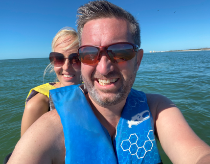
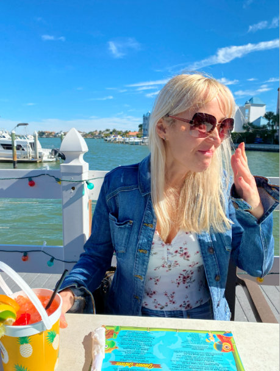
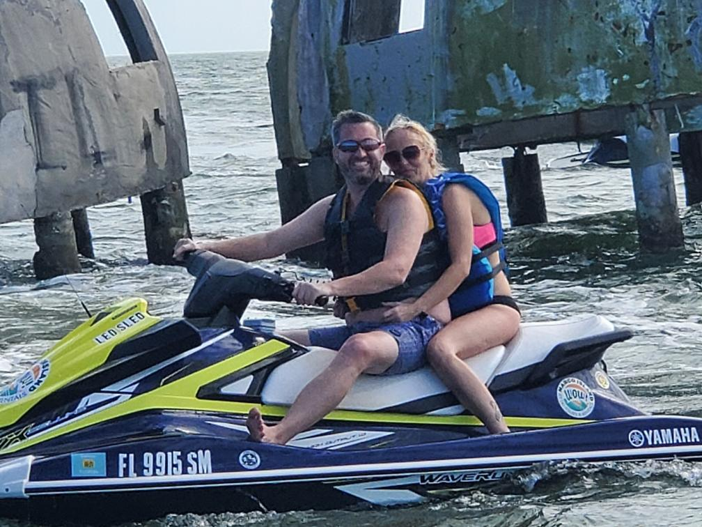
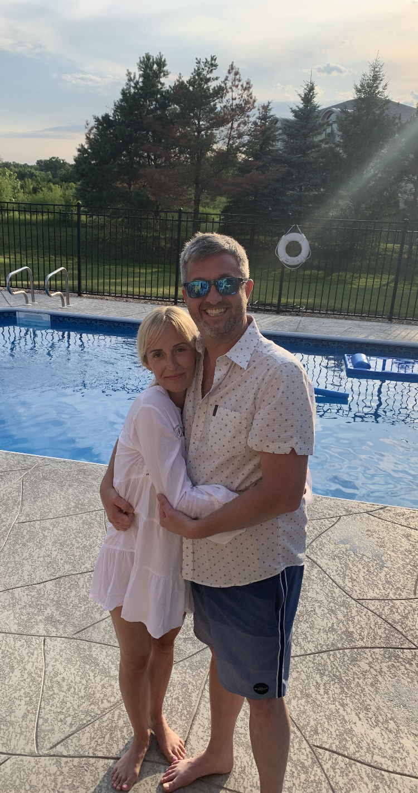
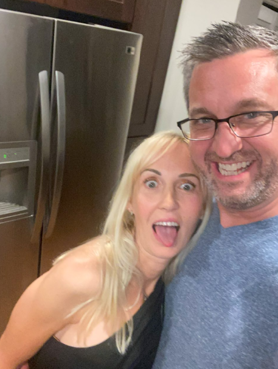
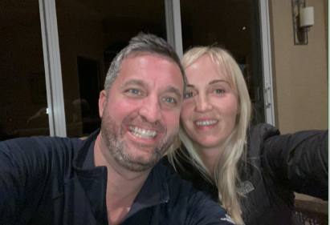
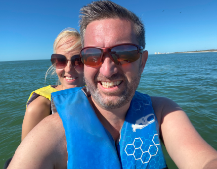
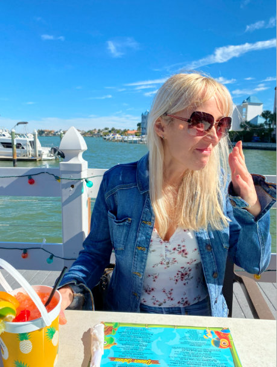
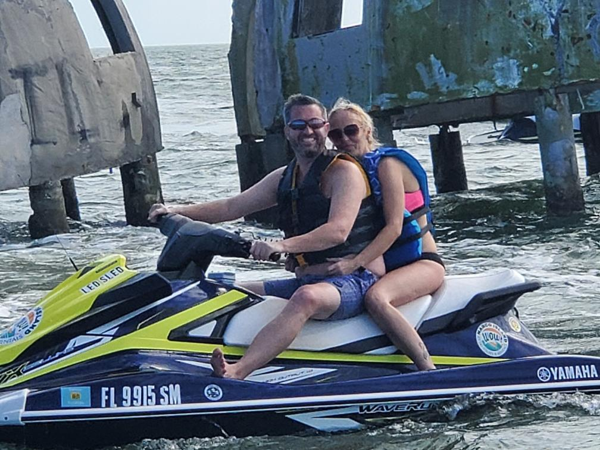
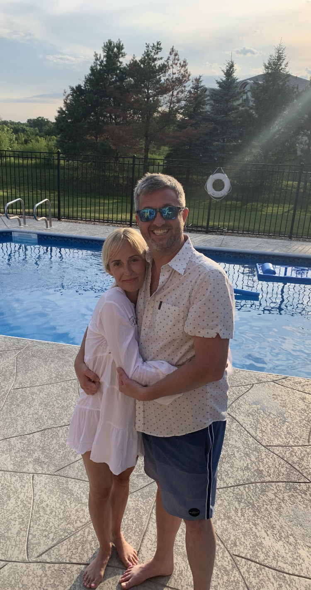
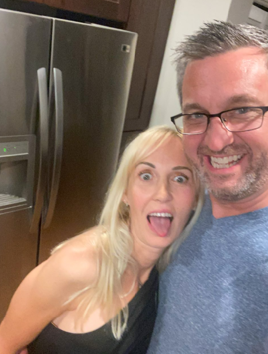
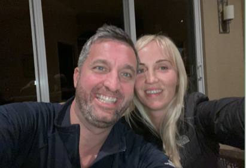